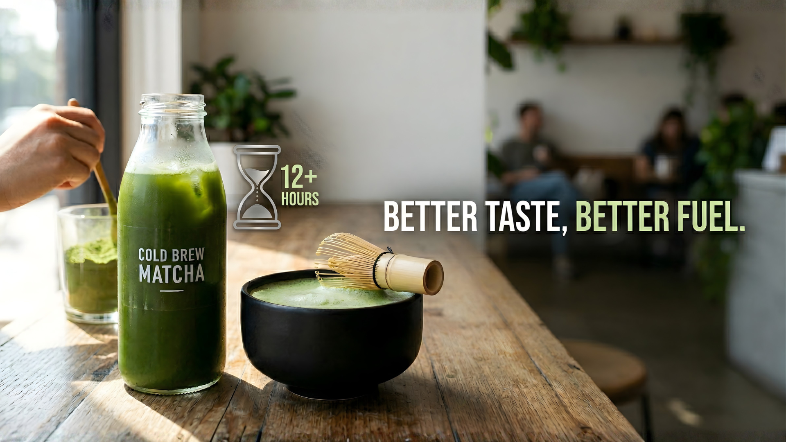

REFINED SIMPLICITY
— The Natural Energy Drink. Sourced from Uji, Japan.
— The Natural Energy Drink. Sourced from Uji, Japan.


Real people. Real green energy. Join the fizz culture.
Sourced from sustainable farms, ensuring pure, pesticide-free ingredients in every sip.
Naturally sweet and refreshing without any artificial sweeteners or hidden additives.
Fuel your day with the revitalizing power of premium ceremonial grade matcha.
Lightly carbonated for a crisp, clean finish that dances on your palate.

As water moves into the matcha, it dissolves hundreds of different substances. In contrast to hot water, our cold water extraction (12+ hours) produces a simpler, more refined extract.
It doesn't change the original flavor substances as much. This gives it the perfect taste and the right amount of bitter tannins in the mix. Simply put: Better taste, better fuel.
Find your nearest sparkle. Now available in 500+ locations across major cities.
That is natural matcha powder. The difference between matcha and most other teas is that you drink the whole leaf, which has been stone-grinded into a fine powder.
There is zero sugar added. We rely on the natural, earthy sweetness of ceremonial grade Uji matcha.
An amino acid found in the tealeaf. It increases serotonin and dopamine signaling, which affects our mindset and makes us calm yet focused.
Every single batch is tested for a numerous list of pesticides and heavy metals. Results are always within strict safety regulations.